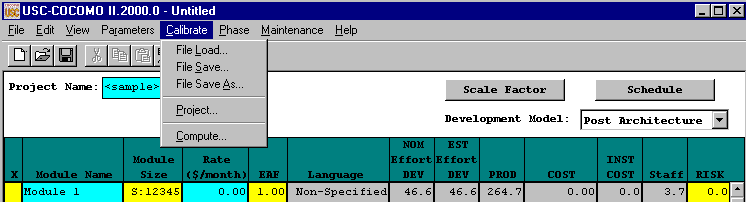
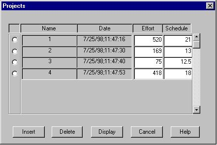
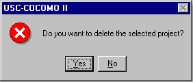
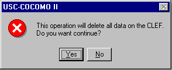
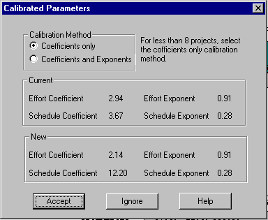

COCOMOII now has the ability to archive your own software project data. Using this data, COCOMOII will compute various coefficients and exponents involved in the effort and schedule equations. This will make your COCOMOII estimates even more reliable.
Each software project to be archived is described as a complete COCOMOII project. It may include multiple modules, each with their own SLOC estimate and EAF factors. In addition, a software project consists of a name, date/time, actual effort and actual schedule. The actual effort and actual schedule must be supplied by the COCOMOII user. Entering revised values for effort and schedule are always possible. Effort is given in units of person/months. Schedule is given in units of months.

FIGURE 5-1 Calibrate Menu
The Calibrate File Load option is used to retrieve a calibration project file as well as loading all project data on the working project window (Figure5-2).
FIGURE 5-2 Load Calibration Dialog Box
The Calibrate File Save command saves the current calibration data in the file whose name was previously identified using File Save As.
FIGURE 5-3 Save Calibration Dialog Box
The Calibrate File Save As command stores the current calibration data as a *.cal file, which has a different file name from the current file. This command works precisely the same as the File Save As for *.est and *.mod files (see Figure 5-4).
FIGURE 5-4 Save As Calibration Dialog Box
A windows appears (shown in Figure 5-5) which displays the archived project data.
- To remove the window, click on Cancel.
- To delete an existing entry, first place an x at the leftmost end of the row and click on Delete. A warning box appears as shown in Figure 5-6.
- To display the entire set of values for an archived project, click on Display. Since the display of an archived project eliminates the display of any existing CLEF data, a warning message appears as shown in Figure 5-7.
- To insert a new archived project from the CLEF, click on Insert.

FIGURE 5-5 Projects Dialog Box

FIGURE 5-6 Delete Warning Dialog

FIGURE 5-7 Display Warning Dialog
This command takes all of the data that has been archived and uses it to compute new constant and exponent values for the effort equation and similarly for the schedule equation. There are two options to calibrate equation parameters. One is the Constant Term and the other one is Development Mode. Those two options are explained below in detail. They are displayed in this window and compared to the values currently used by COCOMOII. To get COCOMOII to use these values, click on Accept, as shown Figure 5-8.

FIGURE 5-8 Compute Dialog Box